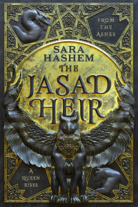

"To hide in plain sight, you must become the very thing they fear most."
Sara Hashem debuts with a dazzling, Egyptian-inspired fantasy that crackles with enemies-to-lovers tension and high-stakes political danger. *The Jasad Heir* follows Sylvia, the hidden heir to the slaughtered royal family of Jasad—a kingdom whose magic and people were outlawed by the conquering Nizahl empire.
Living in quiet exile to protect her life and deadly secret, Sylvia’s carefully constructed world collapses when she is captured by the ruthless heir to the Nizahl throne. Forced into a dangerous game of cat-and-mouse, she must use every ounce of her wit to survive without exposing her true identity.
An intoxicating, sharply plotted triumph of fantasy world-building, delicious tension, and resilient royalty.